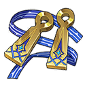
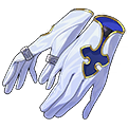

추천 광추
대지로 돌아온 비행
스킬·필살기로 에너지와 포인트 회전
효과 자세히
단일 아군 대상 스킬·필살기 → 자신 에너지 +6pt, 대상 피해 +15%(3턴, 최대 3스택). 2회마다 포인트 +1pt.
속세에서의 유희
아군 치명타 확률·치명타 피해
효과 자세히
자신의 치명타 피해 +32%. 가면 중 동료 치명타 확률 +10%, 치명타 피해 +28%. 시작 3턴, 포인트 4pt 회복마다 4턴 재부여.
댄스! 댄스! 댄스!
필살기로 팀 행동을 앞당김
효과 자세히
필살기 발동 후 모든 아군의 행동 게이지가 24% 증가
아직 전투는 끝나지 않았다
회복효율과 포인트 수급
효과 자세히
회복효율 +10%. 아군 대상 필살기 2회마다 포인트 +1pt. 스킬 후 다음 행동 아군 피해 +30%(1턴).
추천 유물
고행의 길에 다시 오른 사제 4 · 바다에 잠긴 루샤카 2
- 머리

주옵션HP부옵션속도 · 치명타 피해 · 효과 저항 · HP% · 방어력% - 손

주옵션공격력부옵션속도 · 치명타 피해 · 효과 저항 · HP% · 방어력% - 몸통
 주옵션치명타 피해부옵션속도 · 효과 저항 · HP% · 방어력%
주옵션치명타 피해부옵션속도 · 효과 저항 · HP% · 방어력% - 다리
 주옵션속도부옵션치명타 피해 · 효과 저항 · HP% · 방어력%
주옵션속도부옵션치명타 피해 · 효과 저항 · HP% · 방어력% - 구체
 주옵션HP% / 방어력%부옵션속도 · 치명타 피해 · 효과 저항 · HP% (주옵션 제외) · 방어력% (주옵션 제외)
주옵션HP% / 방어력%부옵션속도 · 치명타 피해 · 효과 저항 · HP% (주옵션 제외) · 방어력% (주옵션 제외) - 매듭
 주옵션에너지 회복효율부옵션속도 · 치명타 피해 · 효과 저항 · HP% · 방어력%
주옵션에너지 회복효율부옵션속도 · 치명타 피해 · 효과 저항 · HP% · 방어력%
이 조합을 추천하는 이유
사제 4세트 → 지정 대상 치명타 피해 +18%, 최대 2스택. 루샤카 회복효율 +5%와 첫 슬롯 딜러 공격력 보조.
밤낮의 경계를 나는 매 4 · 생명의 바커 공 2
- 머리
 주옵션HP부옵션속도 · 치명타 피해 · 효과 저항 · HP% · 방어력%
주옵션HP부옵션속도 · 치명타 피해 · 효과 저항 · HP% · 방어력% - 손
 주옵션공격력부옵션속도 · 치명타 피해 · 효과 저항 · HP% · 방어력%
주옵션공격력부옵션속도 · 치명타 피해 · 효과 저항 · HP% · 방어력% - 몸통
 주옵션치명타 피해부옵션속도 · 효과 저항 · HP% · 방어력%
주옵션치명타 피해부옵션속도 · 효과 저항 · HP% · 방어력% - 다리
 주옵션속도부옵션치명타 피해 · 효과 저항 · HP% · 방어력%
주옵션속도부옵션치명타 피해 · 효과 저항 · HP% · 방어력% - 구체
 주옵션HP% / 방어력%부옵션속도 · 치명타 피해 · 효과 저항 · HP% (주옵션 제외) · 방어력% (주옵션 제외)
주옵션HP% / 방어력%부옵션속도 · 치명타 피해 · 효과 저항 · HP% (주옵션 제외) · 방어력% (주옵션 제외) - 매듭
 주옵션에너지 회복효율부옵션속도 · 치명타 피해 · 효과 저항 · HP% · 방어력%
주옵션에너지 회복효율부옵션속도 · 치명타 피해 · 효과 저항 · HP% · 방어력%
이 조합을 추천하는 이유
매 4세트 필살기 후 자기 행동 25% 당김. 바커 공 첫 행동 당김과 댄스! 광추 발동 시점을 묶어 조정하세요.
밤낮의 경계를 나는 매 4 · 생명의 바커 공 2
- 머리
주옵션HP부옵션속도 · 치명타 피해 · 효과 저항 · HP% · 방어력%
- 손
주옵션공격력부옵션속도 · 치명타 피해 · 효과 저항 · HP% · 방어력%
- 몸통
주옵션치명타 피해부옵션속도 · 효과 저항 · HP% · 방어력%
- 다리
주옵션속도부옵션치명타 피해 · 효과 저항 · HP% · 방어력%
- 구체
주옵션HP% / 방어력%부옵션속도 · 치명타 피해 · 효과 저항 · HP% (주옵션 제외) · 방어력% (주옵션 제외)
- 매듭
주옵션에너지 회복효율부옵션속도 · 치명타 피해 · 효과 저항 · HP% · 방어력%
이 조합을 추천하는 이유
매 4세트 필살기 후 자기 행동 25% 당김. 바커 공 첫 행동 당김과 댄스! 광추 발동 시점을 묶어 조정하세요.
이 정도면 잘 키웠다
선택한 세팅 기준 · —는 확인된 수치 없음
사제 4세트에서 속도와 치명타 피해를 확보합니다.
| 스탯 | 추천 스탯 | 준종결 | 종결 |
|---|---|---|---|
| 속도 | 133.4+ | — | 134 / 143[1]치명타 피해 중점형에서 파티 행동 순서에 맞춰 134 또는 143을 선택합니다. |
| 치명타 피해 | 200% | — | 220%+ |
세팅 기준·출처
추천은 4.7 시트, 종결은 공개 가이드의 치명타 피해 중점형입니다. 확인한 자료에 독립적인 준종결 수치가 없습니다.
스탯 조건과 각주
- 속도 · 종결 치명타 피해 중점형에서 파티 행동 순서에 맞춰 134 또는 143을 선택합니다. ↑
매 4세트와 광추 행동 당김으로 3행동을 노립니다.
| 스탯 | 추천 스탯 | 준종결 | 종결 |
|---|---|---|---|
| 속도 | 167.4+[1]3행동 조건에 댄스! 댄스! 댄스!가 필요합니다. | — | — |
스탯 조건과 각주
- 속도 · 추천 스탯 3행동 조건에 댄스! 댄스! 댄스!가 필요합니다. ↑
1돌과 「속세에서의 유희」를 사용하는 매 세팅입니다.
| 스탯 | 추천 스탯 | 준종결 | 종결 |
|---|---|---|---|
| 속도 | 168.3+ | — | — |
성혼과 추천 돌파
성혼 1은 가속과 공격력, 성혼 2는 파티 방어력 감소로 이어집니다. 포인트 소비가 많은 딜러와 먼저 맞추세요.
1수수께끼 대상 공격력 +40%·스파클 속도 +15%추천
기이한 수수께끼를 보유한 아군의 공격력이 40% 증가하고, 전투 시작 시 또는 전투 스킬 발동 시 스파클의 속도가 15% 증가, 지속 2턴
2특성 스택당 적 방어력 −10%추천
특성의 각 스택 효과는 추가로 적의 방어력을 10% 감소시킨다
3전투 스킬 +2 · 일반 공격 +1
전투 스킬 +2 · 일반 공격 +1
4필살기 포인트 회복 +1pt·최대 +1pt
필살기가 전투 스킬 포인트를 추가로 1pt 회복시키고, 특성의 전투 스킬 포인트 최대치 증가 효과가 추가로 1pt 증가
5필살기 +2 · 특성 +2
필살기 +2 · 특성 +2
6전투 스킬 치명타 피해 보강·수수께끼 대상 모두에게 적용
전투 스킬의 치명타 피해 증가 효과가 스파클 치명타 피해의 30%만큼 추가로 증가. 스파클이 전투 스킬을 발동하면, 전투 스킬의 치명타 피해 증가 효과는 기이한 수수께끼를 보유한 모든 동료에게 적용된다. 스파클이 필살기 발동 시 단일 아군 중 전투 스킬의 치명타 피해 증가 효과를 보유한 목표가 있으면, 해당 효과는 기이한 수수께끼를 보유한 동료에게까지 확산된다
추천 파티


기본 운영과 행적
기본 운영
포인트를 많이 쓰는 딜러를 당기세요. 4.0 강화 후 동료가 한 턴에 포인트를 3pt 이상 쓰면 다음 스파클 전투 스킬 비용이 면제됩니다.
행적 우선순위
전투 스킬과 필살기 우선, 이후 특성, 일반 공격. 정련된 새 빛의 포인트·에너지·저항 관통 행적을 해금하세요.
아하 속도 계산기 →